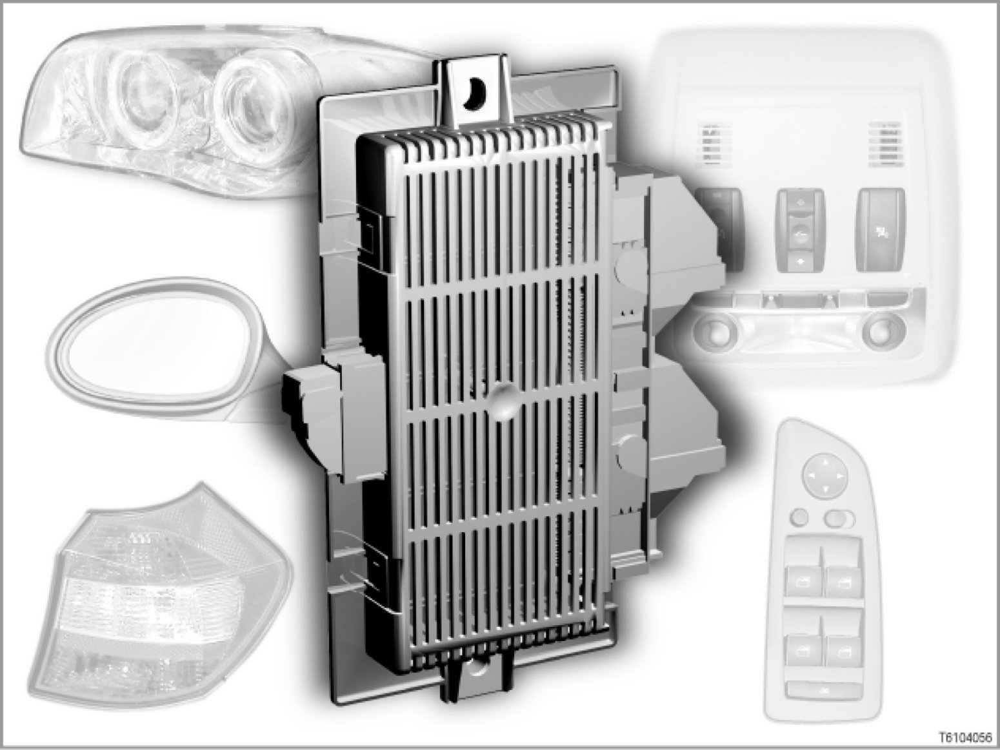

61 04 04 (094) Footwell Module
61 04 04 (094)
Footwell module
E70, E71, E81, E82, E87, E90, E91, E92, E93

Introduction
The footwell module (FRM) is an electrical node point in the footwell on the driver's side. The footwell module picks up the signals from the doors and controls the lighting. The footwell module also controls the adaptive headlights. The footwell module is also the interface to the dashboard.
[system overview ...]
Note: System description of adaptive headlights.
There is a separate system description for the adaptive headlights.
[for further information, please refer to SI Technology (SBT) 63 02 03 007
]
Brief description of components
The following components supply signals for the footwell module:
- Ride-height sensors
- Reversing light switch
- Brake light switch
- Hazard warning lights switch
- Light switch
- Driver's door switch block
- Door contacts in rear doors
- Door contacts in front doors
- Driver's door lock
Several control units are involved in the lighting: In a stricter sense, the following control unit are involved in the lighting system (in alphabetical order):
- ACSM / MRS: Crash safety module / multiple-restraint system
> E81, E82, E87, E90, E91, E92: Multiple restraint system
> E70, E71, E93: (ACSM stands for "Advanced Crash Safety Module", also known as the crash safety module)
The footwell module is connected to the crash safety module / MRS control unit via the K-CAN.
In the event of an accident with corresponding severity, the footwell module automatically switches on the interior light hazard warning lights.
> E92
The crash safety module transmits a message about the status of the front-passenger seat-occupancy detector on the K-CAN.
The belt feeder on the front-passenger side is only actuated if the front-passenger seat is occupied.
- AHM: Trailer module
The trailer module sends a signal indicating whether or not the vehicle is towing a trailer. The trailer module controls the trailer lighting.
When a trailer is being towed, the trailer module automatically deactivates, for example the rear Park Distance Control (PDC) and the rear foglight on the vehicle.
The automatic parking function is deactivated whenever a trainer is detected. (Automatic parking function: To improve the view of the kerb, the mirror glass is folded downwards when reverse gear is engaged. This brings the area close to the bottom of the vehicle, i.e. the kerbside, into view when parking.)
The trailer module (AHM) is connected to the footwell module via the K-CAN.
- DSC: Dynamic Stability Control
When cruise control is in operation, the brake lights are actuated during automatic braking (legal requirement). To this end, a signal must be sent from the DSC to the accelerator pedal module via the PT-CAN.
- FLA: Main-beam assistant
In accordance with the traffic situation, the main-beam assistant sends a switch-on recommendation or a switch-off recommendation for the main-beam headlights to the light module or footwell module (FRM). On the basis of this recommendation and various other the input variables, the footwell module decides whether the main-beam headlights should be switched on or off.
[For further information, please refer to SI Technology (SBT) 63 01 05 140]
- FRM: Footwell module
The footwell module is connected to the vehicle with three connectors.
Two 51-pin connectors connect the main wiring harness. A further 26-pin connector is provided for the connection to the dashboard.
- FZD: Roof control panel
The roof control panel is responsible for the interior lighting components in the roof area.
The basic variant of the roof control panel does not have its own control unit. The front interior lights and the rear interior lights are actuated by the footwell module (FRM).
The High variant of the roof control panel has its own control unit: the FZD control unit.
The footwell module is connected to the FZD control unit via the K-CAN.
[For further information, please refer to SI Technology (SBT) 61 02 04 091]
- JBE: Junction box electronics
The luggage compartment lights and the glove compartment lighting are connected to the junction box electronics.
[for further information, please refer to SI Technology (SBT) 61 05 04 095] Description and Operation
- LDM: Longitudinal dynamics management
In conjunction with the LDM, the option "Active Cruise Control" uses the "turn signal" signal from the footwell module to help when changing lanes. In other words, if a left turn signal is given before overtaking, the distance to the vehicle in front is reduced. The vehicle to be overtaken is "ignored" more easily. Conversely, when you move back into the right lane, vehicles being driven there will be monitored more quickly.
[for further information, please refer to SI Technology (SBT) 66 03 04 086]
- RLS / RLSS: Rain-light sensor / rain-light solar sensor
> E81, E82, E87, E90, E91, E92, E93: Rain-light sensor
> E70, E71: Rain-light solar sensor
The rain-light sensor measures the ambient brightness outside the vehicle.
Depending on the ambient lighting conditions, the footwell module will switch the driving lights on or off. To do this, the automatic driving lights control must be activated (light switch in switch position "A").
- In twilight conditions, the rain-light sensor sends the message "Twilight". The footwell module switches the driving lights on. The automatic headlight-range adjustment for the dipped-beam headlights is actuated.
- In darkness, the rain-light sensor sends the message "Darkness". The adaptive headlights are then activated when the vehicle is cornering.
- SZL: Steering Column Switch
The switch signals from the turn-signal/main-beam switch are picked up and evaluated by the SZL. The evaluated switch signals are resistance-encoded and transmitted from the SZL by direct wires to the footwell module.
[For further information, please refer to SI Technology (SBT) 61 07 04 103]
The following components are controlled:
- Exterior mirrors
- Power window drive
- Headlights
- Rear lights
- Front foglights
- Additional brake light
- Auxiliary turn signal light
- Courtesy lighting, front
- Courtesy lighting, rear
- Licence-plate light
- 2 stepper motor controllers for the adaptive headlight stepper motors
- 2 belt feeder controllers (E92 only)
Belt feeder controllers (E92 only)
The footwell module (FRM) actuates the two belt feeder controllers for the driver's side and front-passenger side. The belt feeder controllers are connected to the footwell module via a LIN bus.
The belt feeder controllers actuate the drive of the belt feeder.
The position of the drive is reported back to the belt feeder controller by a Hall sensor in the drive.
The end position of the extended belt feeder is recorded by another Hall sensor. The end position is indicated to the belt feeder controller.
The belt feeder controller transmits both signals to the footwell module (FRM) via the LIN bus. The actuation circuit is located in the footwell module.
The belt feeder on the front-passenger side is only actuated if the front-passenger seat is occupied.
System functions
The following functions are executed by the footwell module:
- Gateway between LIN bus and K-CAN
- Activation via various signals
- Storing vehicle order
- Other functions
Gateway between LIN bus and K-CAN
The footwell module (FRM) enables communication to take place between the LIN bus and the K-CAN.
The footwell module transfers the messages to the relevant recipient bus.
Components on the LIN bus:
- Special equipment exterior mirrors
- Switch block in driver's door, High variant
- 2 stepper motor controllers for the adaptive headlight stepper motors
- 2 belt feeder controllers (E92 only)
Activation via various signals
The footwell module (FRM) can be woken up via the following signals:
- K-CAN active
- Terminal 15 ON
- Hazard warning switch ON
- Change in state of door contacts
- Anti-theft alarm system alarm
Storing vehicle order
The vehicle order is stored in the footwell module (FRM). For the order to be stored, terminal 15 must be ON and the vehicle must be travelling at a road speed of less than 5 km/h.
The vehicle order enables the vehicle to be identified. Besides the type code number, the vehicle order contains all important equipment features on the vehicle.
Other functions
The footwell module (FRM) influences various functions on the vehicle. The following components are controlled by the footwell module:
- Exterior mirrors
- Exterior lighting
- Interior lighting
- Central locking system
- Power windows
Door mirrors
There are 2 versions of the switch block in the driver's door:
- Switch block in the driver's door, basic variant
The switch block sends its signals directly to the footwell module (FRM).
- Switch block in driver's door, High variant
The switch block is connected to the LIN bus. The requests to adjust the mirror are sent via the LIN bus.
The footwell module (FRM) receives and processes the signals via the LIN bus.
The footwell module scans for requests from the driver's door High switch block every 20 milliseconds.
In sleep mode, the power supply is disconnected. The exterior mirrors cannot be actuated.
The mirror heating is controlled by the footwell module. The corresponding signal is fed via the LIN bus to the electronic evaluation unit in the mirror.
If a mirror memory is fitted, the footwell module will store the memory position of the mirrors.
Exterior lighting
The lighting functions are integrated into the footwell module (FRM).
These lighting functions are:
- Parking lights
- Main-beam headlights
- Headlight flasher
- Turn signals
- Hazard warning lights
- Brake lights
- Dipped-beam headlights
- Reversing light
- Front foglights
- Rear foglight
- Parking lights
Besides the lighting functions, other exterior lighting functions are also integrated in the footwell module:
- Light monitoring
- Headlight beam throw adjustment
- Emergency operating mode if the footwell module should fail
- Lamp replacement
(important lighting functions are substituted by other lights being actuated in the event of individual lights failing.)
- Follow-me-home lights
- Visual alarm after anti-theft alarm has been triggered
(the visual alarm is given as per encoding with hazard warning lights, turn signals with dipped headlights or turn signals with main-beam headlights.)
- Actuation of bi-xenon headlamps
- Control of the stepper motor controller for the adaptive headlights
- Turning light
The turning lights are coupled to the adaptive headlights.
All lighting functions except the additional brake light are supplied with a pulse-modulated signal by the footwell module (FRM). This PWM signal allows constant brightness of exterior lighting.
Interior lighting
On vehicles without roof control panel (FZD), the footwell module actuates the interior lighting in the roof area directly.
All footwell module outputs for interior lighting are pulse-width modulated. This ensures that the brightness of the interior lighting always remains constant in spite of voltage fluctuations.
With standard equipment, the interior lighting comprises the following components:
- Front interior light
- Luggage compartment lighting
- Glove compartment lighting
- Footwell lighting
The following components can also be installed as special equipment for the interior lights:
- Rear interior light
- Courtesy lighting
Central locking system
The footwell module evaluates the status of the Hall sensors in the door contacts.
When the vehicle is locked or unlocked with the mechanical key element, the footwell module will recognise this request. The footwell module will send a message through the K-CAN to the CAS (Comfort Access System).
[for further information, please refer to SI Technology (SBT) 61 01 04 072]
Power windows
The footwell module (FRM) and the junction box electronics (JBE) actuate the power window drives.
The relays for the front power window motors are located in the footwell module. The relays for the rear power window drives are located in the junction box electronics.
Preconditions for activation
The footwell module (FRM) receives a large number of input signals that switch on the interior lighting. The input signals are directly read into the footwell module or are received via the K-CAN.
The following signals switch the interior lighting ON:
- Interior lighting button pressed
- Door opened
- Vehicle unlocked at driver's door lock cylinder
- Vehicle unlocked with remote control
- Terminal R OFF, if terminal 58g was ON no more than 2 minutes earlier
- Crash signal
- Lock button on remote control pressed when central locking system has been in central double-locking for at least 10 seconds
The interior lighting is switched off under the following conditions:
- Central locking system set to thiefproof mode, all doors and the tailgate closed
- Interior lighting button pressed for longer than 3 seconds
- Terminal 58 ON and terminal R OFF
- Terminal R ON with doors closed
- The vehicle is unlocked with the remote control and no door is opened with the space of 20 seconds
- Terminal R OFF and a car door left open for longer than 1 minute
- "Power Down" via diagnosis
- 8 minutes after terminal R OFF
When terminal R is switched OFF, the footwell module (FRM) will switch the interior lighting off after 8 minutes. To do this, the footwell module sends the message for consumer shutdown via the K-CAN. The roof control panel (FZD) receives this message and switches off the interior lighting in the roof area. Interior lights that are switched on directly by the footwell module are also switched off.
The footwell module makes terminal 58 g available via K-CAN or via conventional wiring. Terminal 58 g is pulse-width modulated and has two brightness levels.
- Brightness level for locating lights
The brightness for the locating lights can be set individually with the rocker switch on the steering-column stalk.
- Brightness level for function lighting
The brightness level for function lighting is not dimmed and is switched on at full intensity.
As soon as the hazard-warning lights switch is pressed, the lighting in the hazard-warning lights switch is switched on at full intensity by the footwell module. If terminal 58 g is activated, the hazard-warning lights switch will no longer be illuminated with full intensity. Brightness depends on the setting for the locating lights.
Notes for service staff
The following information is available for service staff:
- General information: ---
- Diagnosis: ---
- Encoding/programming: ---
- Nearly all Car and Key Memory functions are programmed inside the vehicle itself. (please refer to the "Personal profile" section in the Owner's Handbook: Individual settings for up to 3 remote controls via the display in the instrument cluster or via the Central Information Display)
Subject to change.